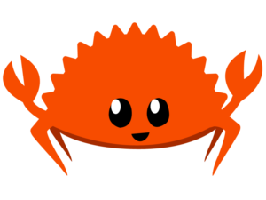
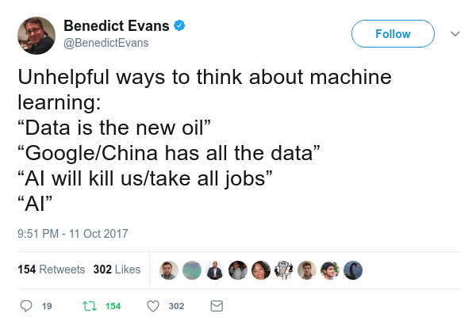
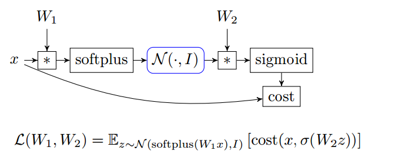
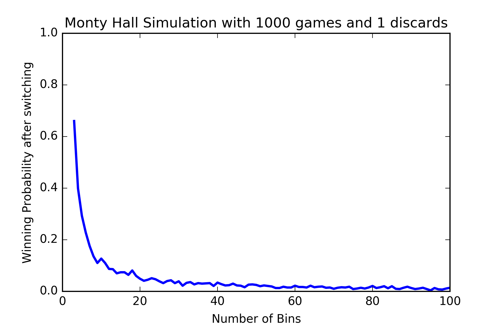
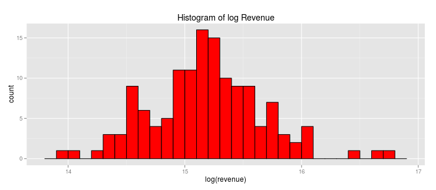

After almost six years, my book on creating programming languages with Rust is finally complete. Here’s what that journey looked like.
How a random thought about using algebraic topology to understand undefined behavior turned into a real paper.
A hands-on guide that teaches GPU programming through 34 progressive challenges - learn by doing, not lectures.
Announcing state-of-the-art optimizations for LLM inference in MAX Serve - originally published on Modular’s blog.
Learn how to build AI agents by integrating MAX Serve with OpenAI’s function calling capabilities - originally published on Modular’s blog.
A practical walkthrough of the new features in Mojo 24.6 - originally published on Modular’s blog.
A step-by-step guide to building a chat application using Llama 3 and MAX Serve - originally published on Modular’s blog.
A practical walkthrough of the new features in Mojo 24.5 - originally published on Modular’s blog.
Exploring the new features in MAX 24.4 including macOS support and Llama3 - originally published on Modular’s blog.
A deep dive into understanding ownership in programming through mental models - originally published on Modular’s blog.
Building semantic search applications using MAX Engine - originally published on Modular’s blog.
std::pin

std::alloc
Cell<T>
Vec
LinkedList<T>


I finally defended my M.Sc. thesis on solving large-scale linear programming problems using Apache Spark. Here’s the full thesis and some thoughts on the journey.


My first M.Sc. thesis on the behavior of the Hilbert scheme of points under the derived McKay correspondence. Pure math, derived categories, and beautiful combinatorics.